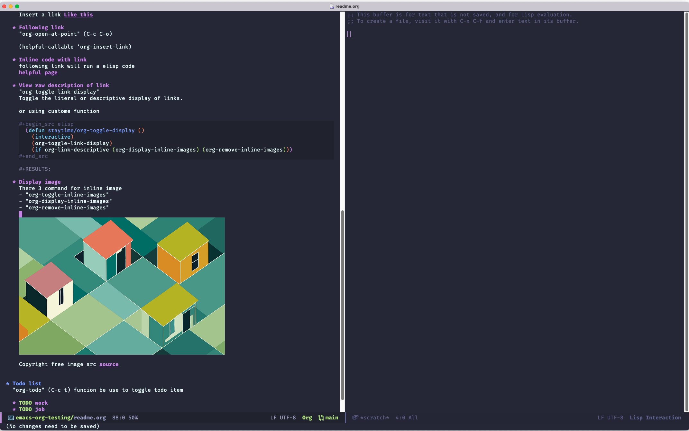

Org Mode testing
Table of Contents

1. Base functional
1.1. Table
Operation
- pressing "tab" to realign "|" char
- pressing "M-LEFT" or "M-RIGHT" to move column left and right
- pressing "M-UP" or "M-DOWN" to move row up and down
| Name | Age | Note |
| elliott | 30 | me |
| ca | 20 | |
| lala | 29 | |
| very very very very long name | 99 |
1.2. Checkbox
org-toggle-checkbox (C-c C-x C-b) or "org-ctrl-c-ctrl-c" (C-c C-c)
- First item
- Second
- Three
2. Run stuff in org mode
"org-confirm-babel-evaluate" or "org-ctrl-c-ctrl-c" (C-c C-c)
(defun my-test-lisp () (message "Hello!")) (my-test-lisp)
print('hello!')
3. Link & Image
3.1. Inserting link
"org-insert-link" (C-c C-l)
Insert a link Like this
3.2. Following link
"org-open-at-point" (C-c C-o)
(helpful-callable 'org-insert-link)
3.3. Inline code with link
following link will run a elisp code =>helpful page (May not show on some plafrom)
3.4. View raw description of link
"org-toggle-link-display" Toggle the literal or descriptive display of links.
or using custome function
(defun staytime/org-toggle-display () (interactive) (org-toggle-link-display) (if org-link-descriptive (org-display-inline-images) (org-remove-inline-images)))
3.5. Display image
There 3 command for inline image
- "org-toggle-inline-images"
- "org-display-inline-images"
- "org-remove-inline-images"
Copyright free image src source
4. Todo list
"org-todo" (C-c t) funcion be use to toggle todo item